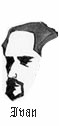
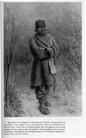
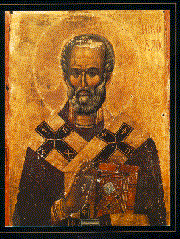

Page index / courses
mainchar.shtml
Main Character Sketches
Ivan
Ivan is the first of two sons born to Sofya Ivanova, the second wife of Fyodor. Ivan follows the same route as Dmitri by coming into the initial care of Grigory. After a time, he is pulled along with his younger brother Alyosha from the servant's care by the lady who brought up his mother. Death came again as the boys' new guardian passed away and left each of them one thousand roubles for the purposes of education. Their new inheritor, Yefim Petrovich took them into his home and saw to their education. Ivan soon comes to display an incredible aptitude for learning which his guardian attempts to enhance by sending him off to university -- only it is left to Ivan to pay his way through publishing articles in local journals. Expository essay soon becomes the boy's strong point as he begins to become interested in an intellectual attack on theology. Ivan becomes well know in literary circles and comes back out of interest in his older brother Dmitri and is introduced into the main plot as the quintessential intellectual who questions everything.
Dmitri

Born to Adelaida Ivanova, the first wife of Old Karamazov, Dmitri is left by his mother who can no longer stand Fyodor's domestic orgies and general bufoonery. At three, Dmitri is left in his father's hands which quickly passed the boy off into the care of his mother's cousin, Pyotr Alexandrovich who had just returned from revolutionary activities in Paris. From there Dmitri passed into the care of the former's aunt and then onto the daughters of this same aunt when she herself died. As for what can be said about his traits in comparison with his other brothers, Dmitri is probably the greatest sensualist, second only to his father. He leads a "wild" life which leads him through war in the Caucuses, duels and general debauchery. The boy returns home in the style of the prodigal son in order to settle with his father on the issue of property he believes he should have a claim to upon coming of age. Dmitri is the one convicted of killing his father.
Alyosha

Following on the heels of Ivan until his older brother's departure for St. Petersburg, Alyosha is the second son of Sofya and becomes the central character of the Novel. Probably the most wondrous of the three boys, Alyosha above all embodies a love of humanity and is taken special care of by Yefim Petrovich. It seems that this love of humanity finds its home in the monastic way of life as Alyosha becomes a follower of the revered Father Zossima. Alyosha gets caught up in the central plot as the mediating force between his brothers and the Old Buffoon. Alyosha approaches everything with open-minded forgiveness to a degree which has not yet been exhibited by any previous Dostoyevsky character. Alyosha becomes the messenger of the Elder Zossima's teachings and is presented as the closest thing to a solution since the Prince in Dostoevsky's The Idiot.
Smerdyakov
Father Zossima
Elders occupy a pivotal role in Russian ecclesiastical society and Father Zossima becomes the ideological focal point of the novel. Based on the philosophy of asceticism, Elders such as Zossima were namely in charge of their community's souls. At sixty-five, Zossima is a former soldier who has now stepped into a life of helping others and has hours during which the townspeople come to him in order to get answers and predictions on the future. Zossima's greatest thematic role in the novel is that of a sage. His teachings of communal responsibility and his ideas of universally shared guild will end up being part of what Dostoyevsky considers to be the true path. Zossima's teachings become engrained in Alyosha who becomes a sort of apostle not only for his family but for the children of the book.
Grushenka
Grushenka is presented as the fertile "femme fatal" of the novel. Being one of the strongest and least male dominated women yet portrayed by Dostoyevsky, she hovers dangerously between being "loose" and a "free-spirit". Her name which means "Pear" in Russian clues the reader in that she may be the closest thing to a sensualist female counterpart to Dmitri, who, needless to say, she ends up with at the end of the novel. Although we have never seen a woman who can dangle men (Fyodor, Dmitri and possibly Alyosha) from her fingers in the same way as Grushenka, we begin to see her character in a more favorable light as she settles down and even shares the guilt of Fyodor's murder with her jailed Dmitri. Ultimately, she is faithful in the end to her true feeling and the reader gets a sense that her coquettish nature is really only in good fun.
Fyodor

Fyodor "god's gift" Karamazov is the father of the Dmitri, Alyosha, Ivan and Smerdyakov. His murder is told of on the first page of the book. He is presented as a terrible buffoon of a man who has no respect for anything but the appeasement of his disgusting sensualist desires. He came into money largely through marriage to his first wife who abandoned him after she realized that he was not willing to abate his bestial lifestyle. What is unique about Fyodor is the way in which we do not see an ounce of humanity in him. He manages to make a joke of everything and everyone. The mistreatment of his sons strongly brings into question the fact that his being killed (supposedly by Dmitri but really Smerdyakov) does in deed constitute patricide. He makes every attempt to guard his own money in order to begrudge his children, and even worse, it is implied that he even attempted to cheat Dmitri, his oldest son out of his mother's inheritance. A sense of justice is fulfilled when he is finally brutally murdered by Smerdyakov his illegitimate son.
- * Ivan Fyodorovich Karamazov
- * Dmitri Fyodorovich Karamazov
- * Alexey Fyodorovich Karamazov
- * Smerdyakov (Pavel Fyodorovich Smerdyadov)
- * Father Zossima
- * Grushenka (Agrafena Alexandrovna)
- * Fyodor Pavlovich Karamazov
- * Dmitri Fyodorovich Karamazov
Ivan

Ivan is the first of two sons born to Sofya Ivanova, the second wife of Fyodor. Ivan follows the same route as Dmitri by coming into the initial care of Grigory. After a time, he is pulled along with his younger brother Alyosha from the servant's care by the lady who brought up his mother. Death came again as the boys' new guardian passed away and left each of them one thousand roubles for the purposes of education. Their new inheritor, Yefim Petrovich took them into his home and saw to their education. Ivan soon comes to display an incredible aptitude for learning which his guardian attempts to enhance by sending him off to university -- only it is left to Ivan to pay his way through publishing articles in local journals. Expository essay soon becomes the boy's strong point as he begins to become interested in an intellectual attack on theology. Ivan becomes well know in literary circles and comes back out of interest in his older brother Dmitri and is introduced into the main plot as the quintessential intellectual who questions everything.
Dmitri
Born to Adelaida Ivanova, the first wife of Old Karamazov, Dmitri is left by his mother who can no longer stand Fyodor's domestic orgies and general bufoonery. At three, Dmitri is left in his father's hands which quickly passed the boy off into the care of his mother's cousin, Pyotr Alexandrovich who had just returned from revolutionary activities in Paris. From there Dmitri passed into the care of the former's aunt and then onto the daughters of this same aunt when she herself died. As for what can be said about his traits in comparison with his other brothers, Dmitri is probably the greatest sensualist, second only to his father. He leads a "wild" life which leads him through war in the Caucuses, duels and general debauchery. The boy returns home in the style of the prodigal son in order to settle with his father on the issue of property he believes he should have a claim to upon coming of age. Dmitri is the one convicted of killing his father.
Alyosha
Following on the heels of Ivan until his older brother's departure for St. Petersburg, Alyosha is the second son of Sofya and becomes the central character of the Novel. Probably the most wondrous of the three boys, Alyosha above all embodies a love of humanity and is taken special care of by Yefim Petrovich. It seems that this love of humanity finds its home in the monastic way of life as Alyosha becomes a follower of the revered Father Zossima. Alyosha gets caught up in the central plot as the mediating force between his brothers and the Old Buffoon. Alyosha approaches everything with open-minded forgiveness to a degree which has not yet been exhibited by any previous Dostoyevsky character. Alyosha becomes the messenger of the Elder Zossima's teachings and is presented as the closest thing to a solution since the Prince in Dostoevsky's The Idiot.
Smerdyakov

Illegitimate and brought to life during one of the more insidious exploits of Fyodor Karamazov, Smerdyakov grows up in his father's house as a servant. Although Fyodor never really admits to siring him during a base drunken orgy (or rape?) upon hearing of his first wife's death, the boys is born by "stinking" Lizaveta who was the town idiot and ended up dying in childbirth. Interestingly enough, all the donations of coppers, food and clothes which she received she quickly would donate to the church and she herself would go barefoot. Her son is named by Fyodor after his mother's nickname and he goes on to Moscow to be trained in cooking after it is discovered that he has interesting eating habits. Coming back from his training and occupying the post of house cook, Smerdyakov is repeatedly insulted and humiliated by Fyodor. Although he is of a low intellect, the boy spends his salary on perfumes, clothes and pomade. Interestingly enough, he is not interested in the other sex....It ends up that Smerdyakov is Fyodor's murderer, but only after having been somewhat encouraged by Ivan who he looks upon with admiration and fondness.Father Zossima

Elders occupy a pivotal role in Russian ecclesiastical society and Father Zossima becomes the ideological focal point of the novel. Based on the philosophy of asceticism, Elders such as Zossima were namely in charge of their community's souls. At sixty-five, Zossima is a former soldier who has now stepped into a life of helping others and has hours during which the townspeople come to him in order to get answers and predictions on the future. Zossima's greatest thematic role in the novel is that of a sage. His teachings of communal responsibility and his ideas of universally shared guild will end up being part of what Dostoyevsky considers to be the true path. Zossima's teachings become engrained in Alyosha who becomes a sort of apostle not only for his family but for the children of the book.
Grushenka
Grushenka is presented as the fertile "femme fatal" of the novel. Being one of the strongest and least male dominated women yet portrayed by Dostoyevsky, she hovers dangerously between being "loose" and a "free-spirit". Her name which means "Pear" in Russian clues the reader in that she may be the closest thing to a sensualist female counterpart to Dmitri, who, needless to say, she ends up with at the end of the novel. Although we have never seen a woman who can dangle men (Fyodor, Dmitri and possibly Alyosha) from her fingers in the same way as Grushenka, we begin to see her character in a more favorable light as she settles down and even shares the guilt of Fyodor's murder with her jailed Dmitri. Ultimately, she is faithful in the end to her true feeling and the reader gets a sense that her coquettish nature is really only in good fun.
Fyodor
Fyodor "god's gift" Karamazov is the father of the Dmitri, Alyosha, Ivan and Smerdyakov. His murder is told of on the first page of the book. He is presented as a terrible buffoon of a man who has no respect for anything but the appeasement of his disgusting sensualist desires. He came into money largely through marriage to his first wife who abandoned him after she realized that he was not willing to abate his bestial lifestyle. What is unique about Fyodor is the way in which we do not see an ounce of humanity in him. He manages to make a joke of everything and everyone. The mistreatment of his sons strongly brings into question the fact that his being killed (supposedly by Dmitri but really Smerdyakov) does in deed constitute patricide. He makes every attempt to guard his own money in order to begrudge his children, and even worse, it is implied that he even attempted to cheat Dmitri, his oldest son out of his mother's inheritance. A sense of justice is fulfilled when he is finally brutally murdered by Smerdyakov his illegitimate son.